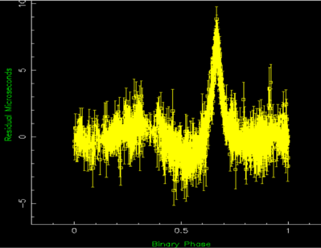

The practice of using observations of radio pulsar pulse profiles to calculate pulse arrival times which are then used to study the rotational history, kinematics and orbits of pulsars, is called pulsar timing.
Often performed at radio wavelengths, the mean pulse profiles of radio pulsars are usually remarkably stable, and when compared with the average profile can yield highly accurate times of arrival or TOAs. In the case of millisecond pulsars, these can be as accurate as 100 nanoseconds! In effect this allows changes in the relative distance between the pulsar and Earth to be computed to an accuracy of 30 metres (~100 feet).

Credit: Swinburne University of Technology
These TOAs can be used to deduce the entire rotational history of a given pulsar. This practice has been used at many telescopes around the world to examine how pulsars rotate – allowing the discovery of pulsar “glitches” (sharp discontinuities in their rotation periods) and the study of their neutron superfluid interiors.
When a pulsar is in orbit about another body, pulsar timing can be used to make highly accurate observations that can be used to deduce companion star masses, and in extreme cases, test theories of relativistic gravity such as Einstein’s general theory of relativity.
Observations over many years can provide accurate proper motions and even parallax measurements.